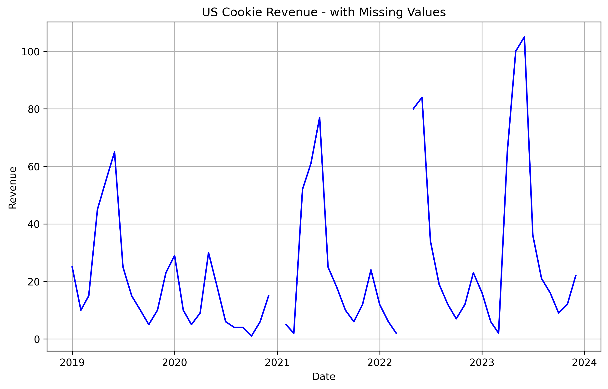
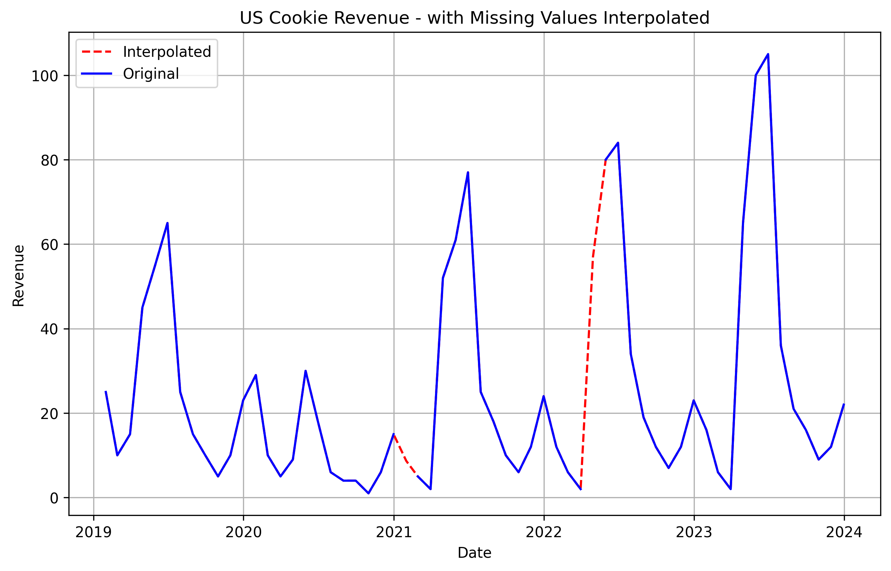
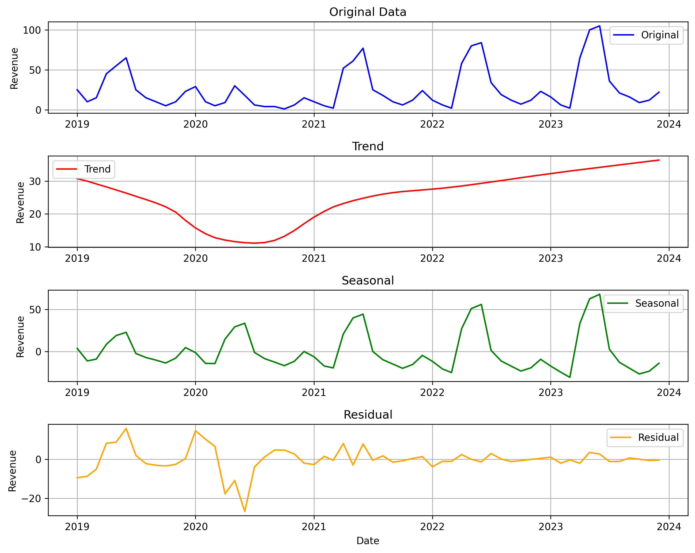
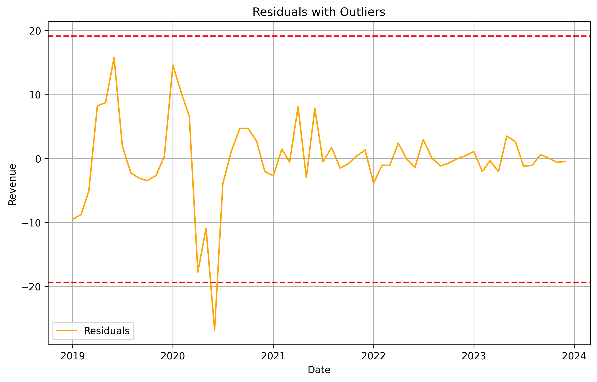

This post is part of the exploratory data analysis chapter within a larger learning series around time series forecasting fundamentals. Check out the main learning path to see other posts in the series.
The example monthly data used in this series can be found here. You can also find the python code used in this post here.
Garbage In, Garbage Out
Having quality data helps produce quality forecasts. There’s an old saying in the data universe, garbage in, garbage out. When your data is bad, you will get bad outcomes. The presence of missing data and outliers can reduce forecast accuracy. Which is a shame because they are so easy to fix.
Missing Data
Time series are unique from other types of data because they have a built in order, based on time. For this to work it’s important that each period of time is represented in the data. For example with a monthly data set spanning five years, we want there to be no missing value for any of the month’s during those five years. Having missing values creates challenges when trying to analyze and model the data, since most statistical and machine learning techniques assume all available time periods are present in the data. This leads to reduced forecast accuracy.
There are a few ways data can be missing in a time series.
- Missing Completely at Random (MCAR)
- Meaning: Data is missing for no specific reason, it’s just random. The missing data doesn’t depend on any pattern or the actual value that’s missing.
- Example: A sensor that records the temperature randomly fails to record a value now and then.
- Missing at Random (MAR)
- Meaning: Data is missing for a reason that depends on other information you already have, but not on the missing values themselves. You can explain the missing data using the rest of the data.
- Example: A temperature sensor is more likely to fail during hot weather, but the failure doesn’t depend on the exact temperature value it would have recorded.
- Not Missing at Random (NMAR)
- Meaning: Data is missing because of the value itself, it’s missing for a reason related to what’s not recorded. The missing data is biased, and you need to understand why it’s missing to deal with it.
- Example: A temperature sensor doesn’t record very high temperatures because it shuts down when it overheats.
- Mixed Mechanisms
- Meaning: Missing data can be a mix of random, explainable, and biased causes.
- Example: Some values are randomly missed due to glitches (MCAR), some during maintenance periods (MAR), and others during extreme weather (NMAR).
Most data I deal with is some combination of missing completely at random or not missing at random. For example there might be a months worth of revenue data missing in a system due to issues with the companies enterprise resource planning (ERP) system. So that data is missing completely at random. A system error created the missing data. Another example is having monthly revenue for three products, where two of the products have five full years of revenue data and the other only has the last three years of data. This is due to that third product being newer and only being sold in the last three years. So that data is not missing at random but is due to a specific reason.
For the first two types of missing data (#1 and #2 in the list), it’s a good idea to use some sort of simple statistical model to interpolate what the missing value should be based on actual values on either side of the data. Below is a monthly time series from our example data. I removed a few months at random. We can use a statistical model that breaks down the time series by trend, seasonality, and residual. Then predict what the missing value should be based on the existing trend and seasonal components.


For the third type of missing data, it’s usually a good idea to go talk to the owner of that data. Maybe missing data in a system is simply due to that observation having a value of 0, so to save memory they just don’t record that value in the system. The easy fix there is to go in and replace those values with zero. You might have some time series in your dataset that are shorter than others. For example, most of your time series could have five years of monthly data, but one may have only the recent three years of monthly data. To deal with this, you could also replace those missing values with 0. That way each time series is the same length. This becomes important later on when we want to start back testing different models to analyze forecast accuracy.
After you replace the missing data, it’s also a good idea to flag where missing values were originally. This can be done with a simple binary variable added to your dataset. Showing a value of 1 when the original data point was missing, and 0 when it wasn’t. This allows us to give this information to a model, and have it adapt to the changes we made in the data.
| Date | Value | Missing |
|---|---|---|
| 2023-01-01 | 10 | 0 |
| 2023-02-01 | 15 | 0 |
| 2023-03-01 | 20 | 0 |
| 2023-04-01 | 25 | 0 |
| 2023-05-01 | 30 | 1 |
| 2023-06-01 | 35 | 0 |
| 2023-07-01 | 40 | 0 |
| 2023-08-01 | 45 | 1 |
| 2023-09-01 | 50 | 0 |
| 2023-10-01 | 55 | 0 |
| 2023-11-01 | 60 | 0 |
| 2023-12-01 | 65 | 1 |
Outliers
Outliers are values in a time series that depart from the norm. They can be extremely high or low values. Having outliers in your time series can worsen forecast accuracy. A model may try to learn the new changes in trend/seasonality caused by an outlier and carry them forward into the future forecast. We don’t want that. Instead we should identify when outliers occur and do our best at dealing with them.
There are a few ways we can spot outliers.
- Smell Test
- Use our domain knowledge to point out values that don’t make sense after inspecting the time series on a chart. For example, a temperature of 150°F in Seattle may not be physically possible. It doesn’t pass our smell test, and so we can flag it manually as an outlier.
- Statistical Methods
- Calculate statistical measures like Z-scores and interquartile ranges (IQR) to spot data points that are outside of standard ranges.
- The Z-score method identifies outliers by measuring how far a data point is from the mean, in terms of standard deviations, with values typically beyond 3 considered outliers.
- The Interquartile Range (IQR) is a measure of statistical dispersion and represents the middle 50% of the data. It is calculated as the difference between the third quartile (Q3), which is the value below which 75% of the data lies, and the first quartile (Q1), which is the value below which 25% of the data lies. The IQR method identifies outliers as data points that fall outside Q1−1.5×IQR (too low) or Q3+1.5×IQR (too high). This method works well for skewed or non-normal data because it uses the quartiles, which are less affected by extreme values than the mean or standard deviation.
- Residual Methods
- Residual methods, such as those used in STL decomposition (Seasonal-Trend decomposition using LOESS), identify outliers by isolating the residuals after removing trend and seasonality from a time series. STL splits a time series into three components:
- Trend: The long-term movement or pattern in the data.
- Seasonal: Repeating patterns or cycles at fixed frequencies.
- Residual: The remaining random noise or deviations after subtracting the trend and seasonal components.
- Outliers are detected in the residuals, which represent the part of the data that cannot be explained by the trend or seasonal patterns. Typically, residuals that fall outside a certain threshold, such as ±3 standard deviations or another robust range, are flagged as outliers. This method is particularly effective for time series data as it accounts for both trend and seasonality, ensuring that outliers are not mistaken for normal patterns.
- Residual methods, such as those used in STL decomposition (Seasonal-Trend decomposition using LOESS), identify outliers by isolating the residuals after removing trend and seasonality from a time series. STL splits a time series into three components:
- Machine Learning Methods
- Machine learning methods identify outliers by training models to learn the normal patterns in the data and then flagging deviations from these patterns. These methods include:
- Isolation Forest: This tree-based algorithm isolates data points by creating random partitions. Outliers are points that require fewer splits to isolate, as they differ significantly from the rest of the data.
- Autoencoders: Neural networks are trained to reconstruct the time series. Data points with high reconstruction errors (i.e., the model struggles to recreate them) are flagged as outliers.
- Clustering: Algorithms like K-Means or DBSCAN group similar data points into clusters. Outliers are points that either belong to sparse or distant clusters or are classified as noise by the algorithm.
- Probabilistic Models: Techniques like Gaussian Mixture Models (GMM) assign probabilities to data points based on how well they fit the learned distribution, flagging low-probability points as outliers.
- Machine learning methods are powerful because they can handle non-linear, multi-dimensional, and non-Gaussian patterns, making them highly effective for complex time series. However, they require careful tuning and may need more data than simpler statistical approaches.
- Machine learning methods identify outliers by training models to learn the normal patterns in the data and then flagging deviations from these patterns. These methods include:
Let’s use the residual method and see if we can spot a few outliers in our time series. First we will decompose our time series, then see what residuals are 3 or more standard deviations away from the average.


There seems to be on major outlier in mid 2020, shown as outside of the dotted upper and lower range. Which is not surprising since our smell test could have told us the same thing. COVID-19 in 2020 was most likely the cause for the sudden change in trend and seasonality for those periods around 2020. We can now confirm it with the residual method for spotting outliers. How cool is that!
Once we know the outliers in our data, there is a few things we can do to handle them.
- Do Nothing: Leave it alone, and let its presence impact our future forecast. This is a good approach if there is a structural change in the time series that you expect to carry onward in the future. For example COVID might have caused a permanent work from home revolution, which could impact your business that relies on growth in office space. So leaving it along would give the model insight into a change that is expected to continue in the future.
- Flag It: Similar to flagging missing values, we can add a binary variable to our dataset. A value of 1 to indicate an outlier occurred, and a 0 when it did not. This will allow our model to understand true one time events that are not expected to happen again in the future. Making it less likely for a model to learn the change in pattern. COVID-19 was truly a one off thing, so flagging the outliers could be helpful for our time series.
- Remove It: Remove the outlier, and treat it like a missing value. You can then use the methods discussed earlier to fill in the missing value with something that is more in line with future trends and seasonality. Combining this approach with adding an outlier flag from #2 is a solid approach.
Final Thoughts
Handling the presence of missing values and outliers can sometimes be more art than science, so always make sure to be adaptable in using the right approach for your use case. When done correctly, cleaning your data of missing values and outliers can help you understand your data while improving forecast accuracy.